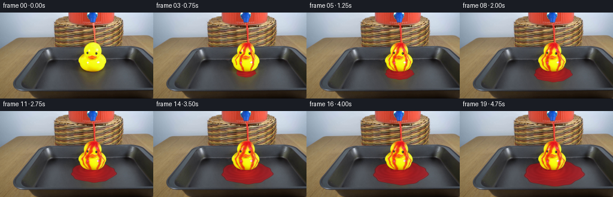
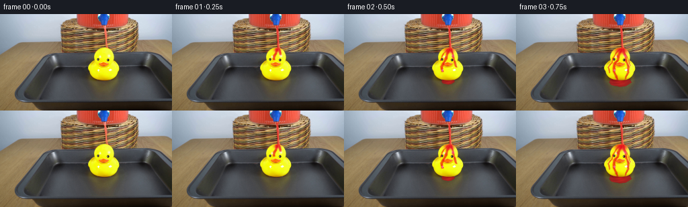

CODING AGENTS AS PIXEL WORLD MODELS
traex/GPT-6.1-Sol · 0086
点击播放 · 原生 RGB 像素
逐轮保存的候选
回放视频、检查图与代码变化。
每份候选均可单独播放。实际图片检查记录在下方工具轨迹中。
候选 01播放与检查图
点击播放 · 原生 RGB 像素


展开代码变化
--- 上一保存版本
+++ 本次保存版本
@@ -0,0 +1,233 @@
+"""Locked-camera liquid demonstration, rendered with local RGB compositing."""
+from pathlib import Path
+import numpy as np
+from PIL import Image
+from scipy.ndimage import map_coordinates, gaussian_filter
+import cv2
+import artifact_io
+
+ROOT = Path(__file__).resolve().parent
+S = 4
+H, W = 144, 256
+Y, X = np.mgrid[0:H*S, 0:W*S].astype(np.float32)
+X = (X+.5)/S-.5
+Y = (Y+.5)/S-.5
+
+
+def smooth(a, b, v):
+ z = np.clip((v-a)/(b-a), 0, 1)
+ return z*z*(3-2*z)
+
+
+def mix(canvas, color, alpha):
+ if np.ndim(alpha) == 2:
+ alpha = alpha[..., None]
+ canvas[:] = canvas*(1-alpha) + color*alpha
+
+
+def interp_path(points):
+ p = np.asarray(points, np.float32)
+ cx = np.interp(Y[:, 0], p[:, 1], p[:, 0])[:, None]
+ return cx
+
+
+def make_duck_mask():
+ # Outline of the rubber object, obtained numerically from the first frame.
+ yy = [49.4,50,51,52,53,54,55,56,57,58,59,60,61,62,63,64,65,66,
+ 67,68,69,70,71,72,73,74,75,76,77,78,79,80,81,82,83,84,85,86,
+ 87,88,89,90,91,92,93,94,95,96,97,98,98.7]
+ ll = [154,150.5,147.5,146.5,145.5,144,143,142,141.5,141,140.6,140.3,139.7,
+ 139.5,139.5,139.5,139.5,139.6,139.8,140,139,137.5,136,135,134,133.3,
+ 132.5,132,131.5,131,130.6,130.5,130.6,131,131.5,132,132.3,133,133.4,
+ 133.5,134,134.4,135,136,136.8,138,139.5,141,144,149,155]
+ rr = [158,159.8,162,163.5,165,166,166.5,167,167.4,167.8,168.3,168.7,169,
+ 169.3,169.4,169.4,169.3,169.1,169,168.5,169.5,170.5,171.5,173,173.7,
+ 174.6,175.5,176,176.5,176.8,177,177,177,177,176.8,176.2,175.7,175,
+ 174.8,174.8,174.4,174,173.5,173,172,171,169.8,168.5,166,162,155]
+ left = np.interp(Y[:,0], yy, ll)[:,None]
+ right = np.interp(Y[:,0], yy, rr)[:,None]
+ a = smooth(-.45,.35,X-left)*smooth(-.45,.35,right-X)
+ a *= smooth(49.2,50.1,Y)*(1-smooth(98,99,Y))
+ return a, left, right
+
+DUCK, LEFT, RIGHT = make_duck_mask()
+
+# Different gravity-driven paths around the convex head and protruding beak.
+PATHS = [
+ ([(156.8,50),(155,55),(152,62),(151,68),(147,73),(145,78),(146,87),(151,98)], 2.1, 0.0, .88),
+ ([(158.3,50),(160.5,57),(162.6,65),(164,71),(167,79),(166,87),(162,97)],1.7,.10,.82),
+ ([(154,52),(148,58),(144,66),(142,72),(137,79),(139,88),(146,96)],1.05,.23,.73),
+ ([(159,55),(164,61),(167,69),(170,77),(174,82),(171,90),(166,96)],.75,.38,.59),
+]
+
+def render(t, base, hi):
+ out = hi.copy()
+ # The runoff forms a shallow puddle confined to the baking tray floor.
+ age = max(0.,t-.43)
+ duck_alpha = DUCK
+ pool_a = np.zeros_like(X)
+ if age > 0:
+ rx = 4+22*np.sqrt(age)
+ ry = 2.5+9.1*np.sqrt(age)
+ cy = 99.0+2.4*np.sqrt(age)
+ cx = 154.3 + .55*age
+ u = (X-cx)/rx
+ v = (Y-cy)/ry
+ theta = np.arctan2(v,u)
+ boundary = (1+.032*np.sin(5*theta+1.3)+.02*np.sin(9*theta-.4)
+ +.015*np.sin(13*theta+age*.25))
+ radius = np.sqrt(u*u+v*v)/boundary
+ pool_a = (1-smooth(.965,1.025,radius))*(1-duck_alpha)
+ pool_a *= smooth(66,70,Y)*(1-smooth(125.5,126.5,Y))
+ # A translucent red body over the metal, with dark meniscus and specular light.
+ lum = hi.mean(-1)
+ color = np.empty_like(hi)
+ light = .4*np.sin(X*.09)+.25*np.sin(Y*.31)
+ color[...,0] = 134+lum*.47 + 7*light
+ color[...,1] = 11+lum*.105
+ color[...,2] = 17+lum*.12
+ edge = np.exp(-((radius-.98)/.026)**2)
+ color *= (1-.30*edge)[...,None]
+ # Surface rings are small ripples rather than opaque geometric outlines.
+ q = np.sqrt(((X-147)/1.75)**2+((Y-98)/.7)**2)
+ wave = np.sin(q*1.15-t*14)*np.exp(-q/22)
+ color += wave[...,None]*np.array([9,3,3],np.float32)
+ # Diffuse reflection of the yellow body survives beneath the red filter.
+ refl = np.exp(-((X-156)/(7+age))**2 - ((Y-(101+age))/(5+age*.6))**2)
+ color += refl[...,None]*np.array([28,9,0],np.float32)
+ glint = np.exp(-((v-.53+.06*np.sin(X*.21-t*2))/.025)**2)
+ glint *= np.exp(-((u+.2)/.68)**6)
+ color += glint[...,None]*np.array([51,35,32],np.float32)*.30
+ mix(out,np.clip(color,0,255),pool_a*(.89-.10*smooth(.2,.9,radius)))
+ # Wet spreading edge catches the overhead light very faintly.
+ sheen = np.exp(-((radius-.948)/.012)**2)*(1-duck_alpha)
+ sheen *= pool_a *(.1+.15*(np.sin(theta*3+.5)+1)/2)
+ mix(out,np.array([223,99,84]),sheen)
+
+ # Red liquid remains transparent enough to reveal the yellow substrate and eyes.
+ film = np.zeros_like(X)
+ glints = np.zeros_like(X)
+ front = 50 + 76*max(0,t-.035)
+ cap_age = smooth(0,.85,t)
+ cap = np.exp(-(((X-156.2)/(3.2+4.2*cap_age))**2 + ((Y-53.2)/(2.1+2.3*cap_age))**2)*1.0)
+ film += cap * (.72+.45*cap_age)
+ for j,(pts,width,delay,strength) in enumerate(PATHS):
+ elapsed = max(0,t-delay)
+ c = interp_path(pts)
+ flow_y = Y-50
+ # Small surface instabilities advect downwards in real time.
+ c = c + .32*np.sin(flow_y*.53-t*10+j*2) + .13*np.sin(flow_y*1.4-t*17+j)
+ ww = width*(.78+.25*np.sin(flow_y*.31-t*7+j)**2)
+ ww *= (1+.45*smooth(.1,2.8,t))
+ ww *= (1-.25*smooth(78,98,Y))
+ dist = np.abs(X-c)
+ stripe = np.exp(-(dist/(ww+.01))**4)
+ arrive = 50+72*elapsed
+ activation = (1-smooth(arrive-1.1,arrive+1.1,Y))*smooth(0,.12,elapsed)
+ activation *= smooth(pts[0][1]-1,pts[0][1]+1,Y)
+ activation *= 1-smooth(pts[-1][1]-.3,pts[-1][1]+.5,Y)
+ thick = strength*(.65+.26*np.sin(flow_y*.4-t*9+j)**2)
+ film += stripe*activation*thick
+ gl = np.exp(-((X-(c-ww*.55))/.24)**2)
+ gl *= activation*(.3+.7*np.sin(flow_y*.76-t*15+j)**8)
+ glints += gl*.31
+ film *= DUCK
+ # Slightly broader, very thin wetting envelope after a few seconds.
+ broad = gaussian_filter(film, sigma=1.8*S)*.22*smooth(.4,2.5,t)
+ film = (film+broad)*DUCK
+ # Beer-Lambert filtering: the liquid absorbs green and blue, not yellow rubber paint.
+ transmission = np.exp(-film[...,None]*np.array([.075,1.95,.83],np.float32))
+ wet = hi*transmission
+ wet += (1-transmission)*np.array([202,15,20],np.float32)
+ wet *= (1-.035*np.minimum(film,1.4))[...,None]
+ # Optical gloss and mobile highlights without obscuring the eyes.
+ g = np.clip(glints,0,.38)*DUCK
+ wet = wet*(1-g[...,None])+np.array([255,207,166])*g[...,None]
+ out += (wet-hi)*DUCK[...,None]
+
+ # Small transparent runoff falling from the duck's lower sides to the tray.
+ if t > .62:
+ for j,(xx,yy) in enumerate([(146.5,95.3),(163,95.8),(138.5,90)]):
+ depth = 4.3 if j<2 else 7.9
+ end = yy+depth
+ center = xx + .17*np.sin(Y*.75-t*12+j)
+ a = np.exp(-((X-center)/(.45 if j<2 else .34))**4)
+ a *= smooth(yy,yy+.4,Y)*(1-smooth(end-.7,end,Y))
+ a *= .63*smooth(.62,1,t)*(1-DUCK)
+ col = np.array([220,39,31],np.float32)
+ mix(out,col,a)
+
+ # Free-falling stream: a narrow, slightly contracting continuous liquid column.
+ z = np.maximum(Y-17,0)
+ center = 156.15+1.22*(1-np.exp(-z/13))
+ center += .19*np.sin(z*.72-t*13)+.11*np.sin(z*1.31-t*19)
+ ww = (1.4-.31*(1-np.exp(-z/14))) * (1+.045*np.sin(z*.6-t*16))
+ distance = (X-center)/ww
+ stream_a = (1-smooth(.80,1.15,np.abs(distance)))
+ stream_a *= smooth(16.6,17.7,Y)*(1-smooth(50.5,51.3,Y))
+ stream_a *= smooth(0,.12,t)
+ sc = np.empty_like(out)
+ sc[...,0]=229+8*np.sin(z*.46-t*11)
+ sc[...,1]=40+7*np.sin(z*.39-t*12)
+ sc[...,2]=33+7*np.sin(z*.39-t*12)
+ highlight = np.exp(-((distance-.28)/.22)**2)*(.5+.3*np.sin(z*.74-t*15)**2)
+ sc = sc*(1-highlight[...,None]) + np.array([255,159,141])*highlight[...,None]
+ edge = np.exp(-((distance+.74)/.22)**2)
+ sc = sc*(1-edge[...,None]*.23)
+ mix(out,np.clip(sc,0,255),stream_a*.94)
+
+ # Crown impact, tiny curved sheets and ballistic droplets.
+ impact = smooth(.03,.24,t)
+ collision = np.exp(-((X-157.3)/3.5)**2-((Y-50.7)/.95)**2)*impact*.65
+ mix(out,np.array([240,54,35]),collision*DUCK)
+ for side in [-1,1]:
+ # The intermittent splash arcs lie just above the top of the head.
+ u = (X-157.4)*side
+ arc_y = 50.6 - 1.45*np.sin(np.clip(u/5.3,0,1)*np.pi)
+ splash = np.exp(-((Y-arc_y)/.27)**2)
+ splash *= smooth(.9,1.3,u)*(1-smooth(4.7,5.3,u))
+ splash *= impact*(.14+.20*np.sin(t*9+side)**2)
+ mix(out,np.array([240,93,71]),splash)
+ for j in range(8):
+ period = .36+.021*(j%3)
+ a = (t+j*.087)%period
+ vx = (-1 if j%2 else 1)*(10.5+3.5*(j%4))
+ vy = -13-2.6*(j%3)
+ px = 157.4+vx*a
+ py = 50.6+vy*a+46*a*a
+ r = .24+.08*(j%3)
+ m = np.exp(-(((X-px)/r)**2+((Y-py)/(r*1.22))**2)*1.35)
+ m *= impact*.60*(1-smooth(period-.035,period,a))
+ mix(out,np.array([234,65,45]),m)
+ # A few runoff splashes at the puddle's entry points, with reflected pinpricks.
+ if age > .28:
+ for j in range(6):
+ a = (t+.131*j)%(.43+.023*j)
+ source = 145 if j%2 else 163
+ vx = (-1 if j%2 else 1)*(9+2*j)
+ px = source+vx*a
+ py = 98-7*a+22*a*a
+ r = .22+.03*j
+ m = np.exp(-(((X-px)/r)**2+((Y-py)/(r*1.2))**2))
+ m *= .70*(1-DUCK)*smooth(.28,.6,age)
+ mix(out,np.array([217,49,35]),m)
+
+ delta = cv2.resize(out-hi,(W,H),interpolation=cv2.INTER_AREA)
+ return np.clip(np.rint(base.astype(np.float32)+delta),0,255).astype(np.uint8)
+
+
+def main():
+ base = np.asarray(Image.open(ROOT/'first_frame.png').convert('RGB'))
+ hi = cv2.resize(base.astype(np.float32),(W*S,H*S),interpolation=cv2.INTER_CUBIC)
+ frames = [base.copy()]
+ for i in range(1,20):
+ frames.append(render(i/4,base,hi))
+ frames = np.stack(frames)
+ artifact_io.save(frames,ROOT)
+ # Small numerical audit is also useful with image-viewing disabled.
+ assert np.array_equal(frames[0],base)
+ print('Saved',frames.shape,frames.dtype)
+ print('Frame changes:', [int(np.count_nonzero(np.any(f!=base,axis=-1))) for f in frames])
+
+if __name__=='__main__':
+ main()
可观测工具轨迹
实际执行的命令与返回图片。
命令 1exit 0
/bin/bash -lc "ls -la && cat prompt.txt && printf '\\n---RULES---\\n' && cat GENERATION_RULES.md"
命令 2exit 0
/bin/bash -lc "cat artifact_io.py && python - <<'PY'
from PIL import Image
import numpy as np
im=Image.open('first_frame.png');print(im.size)
a=np.array(im);print(a.shape)
# colored glyph grid, 128 by 72 RGB region medians
b=np.array(im.resize((128,72)))
for row in b:
s=''
for r,g,bl in row.astype(int):
if r>g*1.38 and r>bl*1.35 and r>80: c='R' if r>145 else 'r'
elif r>140 and g>105 and bl<min(r,g)*.65: c='Y'
elif r>g*1.13 and g>bl*1.18: c='o' if r>125 else ':'
elif min(r,g,bl)>220:c=' '
elif min(r,g,bl)>175:c='.'
elif min(r,g,bl)>120:c='-'
elif min(r,g,bl)>70:c='='
elif max(r,g,bl)<40:c='#'
else:c='+'
s+=c
print(s)
PY"命令 3exit 0
/bin/bash -lc "python - <<'PY'
from PIL import Image
import numpy as np
a=np.array(Image.open('first_frame.png'))
for y in range(0,103):
s=''
for x in range(125,176):
r,g,b=map(int,a[y,x]);
if r>170 and g<70 and b<85:c='R'
elif r>g*1.5 and r>b*1.25 and r>70:c='r'
elif r>160 and g>125 and b<90:c='Y'
elif r>130 and g>95 and b<90:c='y'
elif r>g*1.15 and g>b*1.2:c='o' if r>130 else 'w'
elif min(r,g,b)>220:c='W'
elif min(r,g,b)>165:c='.'
elif min(r,g,b)>115:c='-'
elif min(r,g,b)>65:c='='
elif max(r,g,b)<45:c='#'
else:c='+'
s+=c
print(f'{y:3} {s}')
print('raw center')
for y in range(0,66):
print(y,[(x,tuple(a[y,x])) for x in range(148,160)])
PY"命令 4exit 0
/bin/bash -lc "python - <<'PY'
import numpy as np
from PIL import Image
im=np.array(Image.open('first_frame.png')).astype(float)
colors={'R':(240,40,35),'r':(187,55,32),'p':(242,125,107),'B':(30,85,190),'c':(95,175,208),'W':(248,249,250),'.':(191,191,189),'-':(148,146,146),'=':(94,96,94),'k':(40,38,40),'Y':(246,251,34),'y':(241,213,36),'o':(197,152,78),'w':(128,85,49),'t':(83,46,25),'b':(164,110,64),'h':(225,222,143)}
keys=list(colors);cs=np.array(list(colors.values()))
for ymin,ymax,xmin,xmax in [(0,58,105,193),(48,104,123,186)]:
print('range',xmin,xmax,'x',ymin,ymax)
for y in range(ymin,ymax):
ds=((im[y,xmin:xmax,None]-cs[None])**2).sum(-1)
print(f'{y:3} '+''.join(keys[i] for i in np.argmin(ds,-1)))
PY"命令 5exit 0
/bin/bash -lc "python - <<'PY'
import numpy as np
from PIL import Image
im=np.array(Image.open('first_frame.png'))
for y in range(0,32,2):
print(y,[(x,tuple(map(int,im[y,x]))) for x in (90,105,114,116,118,130,142,145,162,166,172,182,189,191,193,196,203,207)])
print('tray cross sections')
for y in (58,65,72,85,98,105,112,120,125,130,132,135):
print(y,[(x,tuple(map(int,im[y,x]))) for x in (24,40,60,80,100,120,132,142,152,164,180,200,220,240,254)])
PY"命令 6exit 0
/bin/bash -lc "python - <<'PY'
import importlib.util
for s in ['numpy','scipy','PIL','cv2','imageio','imageio_ffmpeg']:
print(s, bool(importlib.util.find_spec(s)))
from PIL import Image
import numpy as np
from scipy import ndimage
im=np.array(Image.open('first_frame.png')).astype(float);Y,X=np.mgrid[:144,:256]
m=(im[:,:,0]>140)&(im[:,:,1]>110)&(im[:,:,2]<120)&(X>129)&(X<183)&(Y>=49)&(Y<=99)
m=ndimage.binary_fill_holes(m)
for y in range(49,101):
xs=np.where(m[y])[0];print(y, (int(xs.min()),int(xs.max())) if len(xs) else None)
PY"命令 7exit 0
/bin/bash -lc "python - <<'PY'
from PIL import Image
import numpy as np
a=np.array(Image.open('first_frame.png'))
for y in range(17,52):
print(f'{y:2}', ' '.join(f'{x}:{a[y,x,0]},{a[y,x,1]},{a[y,x,2]}' for x in range(153,162)))
PY"命令 8exit 0
/bin/bash -lc "python - <<'PY'
import numpy as np
from PIL import Image
from scipy import ndimage
a=np.array(Image.open('first_frame.png')).astype(float); Y,X=np.mgrid[:144,:256]
# approx allowed head/body envelope
bound=np.interp(Y[:,0],[49,50,51,52,53,54,55,56,57,58,66,68,69,70,75,80,85,90,94,98,99],[3,5,8,9,10,11,12,13,14,14,15,15,16,18,21,24,23,21,17,6,0])[:,None]
al=(abs(X-154.8)<bound+1)&(Y>=50)&(Y<=98)
m=(a[:,:,0]>160)&(a[:,:,1]>150)&(a[:,:,1]>a[:,:,0]*.83)&(a[:,:,2]<150)&al
m=ndimage.binary_fill_holes(m)
l,n=ndimage.label(m);areas=ndimage.sum(m,l,range(n+1));areas[0]=0;m=l==np.argmax(areas)
for y in range(49,100):
xs=np.where(m[y])[0];print(y,(xs.min(),xs.max()) if len(xs) else None)
PY"命令 9exit 0
/bin/bash -lc "mkdir -p .tmp && cat > generate.py <<'PY'
\"\"\"Locked-camera liquid demonstration, rendered with local RGB compositing.\"\"\"
from pathlib import Path
import numpy as np
from PIL import Image
from scipy.ndimage import map_coordinates, gaussian_filter
import cv2
import artifact_io
ROOT = Path(__file__).resolve().parent
S = 4
H, W = 144, 256
Y, X = np.mgrid[0:H*S, 0:W*S].astype(np.float32)
X = (X+.5)/S-.5
Y = (Y+.5)/S-.5
def smooth(a, b, v):
z = np.clip((v-a)/(b-a), 0, 1)
return z*z*(3-2*z)
def mix(canvas, color, alpha):
if np.ndim(alpha) == 2:
alpha = alpha[..., None]
canvas[:] = canvas*(1-alpha) + color*alpha
def interp_path(points):
p = np.asarray(points, np.float32)
cx = np.interp(Y[:, 0], p[:, 1], p[:, 0])[:, None]
return cx
def make_duck_mask():
# Outline of the rubber object, obtained numerically from the first frame.
yy = [49.4,50,51,52,53,54,55,56,57,58,59,60,61,62,63,64,65,66,
67,68,69,70,71,72,73,74,75,76,77,78,79,80,81,82,83,84,85,86,
87,88,89,90,91,92,93,94,95,96,97,98,98.7]
ll = [154,150.5,147.5,146.5,145.5,144,143,142,141.5,141,140.6,140.3,139.7,
139.5,139.5,139.5,139.5,139.6,139.8,140,139,137.5,136,135,134,133.3,
132.5,132,131.5,131,130.6,130.5,130.6,131,131.5,132,132.3,133,133.4,
133.5,134,134.4,135,136,136.8,138,139.5,141,144,149,155]
rr = [158,159.8,162,163.5,165,166,166.5,167,167.4,167.8,168.3,168.7,169,
169.3,169.4,169.4,169.3,169.1,169,168.5,169.5,170.5,171.5,173,173.7,
174.6,175.5,176,176.5,176.8,177,177,177,177,176.8,176.2,175.7,175,
174.8,174.8,174.4,174,173.5,173,172,171,169.8,168.5,166,162,155]
left = np.interp(Y[:,0], yy, ll)[:,None]
right = np.interp(Y[:,0], yy, rr)[:,None]
a = smooth(-.45,.35,X-left)*smooth(-.45,.35,right-X)
a *= smooth(49.2,50.1,Y)*(1-smooth(98,99,Y))
return a, left, right
DUCK, LEFT, RIGHT = make_duck_mask()
# Different gravity-driven paths around the convex head and protruding beak.
PATHS = [
([(156.8,50),(155,55),(152,62),(151,68),(147,73),(145,78),(146,87),(151,98)], 2.1, 0.0, .88),
([(158.3,50),(160.5,57),(162.6,65),(164,71),(167,79),(166,87),(162,97)],1.7,.10,.82),
([(154,52),(148,58),(144,66),(142,72),(137,79),(139,88),(146,96)],1.05,.23,.73),
([(159,55),(164,61),(167,69),(170,77),(174,82),(171,90),(166,96)],.75,.38,.59),
]
def render(t, base, hi):
out = hi.copy()
# The runoff forms a shallow puddle confined to the baking tray floor.
age = max(0.,t-.43)
duck_alpha = DUCK
pool_a = np.zeros_like(X)
if age > 0:
rx = 4+22*np.sqrt(age)
ry = 2.5+9.1*np.sqrt(age)
cy = 99.0+2.4*np.sqrt(age)
cx = 154.3 + .55*age
u = (X-cx)/rx
v = (Y-cy)/ry
theta = np.arctan2(v,u)
boundary = (1+.032*np.sin(5*theta+1.3)+.02*np.sin(9*theta-.4)
+.015*np.sin(13*theta+age*.25))
radius = np.sqrt(u*u+v*v)/boundary
pool_a = (1-smooth(.965,1.025,radius))*(1-duck_alpha)
pool_a *= smooth(66,70,Y)*(1-smooth(125.5,126.5,Y))
# A translucent red body over the metal, with dark meniscus and specular light.
lum = hi.mean(-1)
color = np.empty_like(hi)
light = .4*np.sin(X*.09)+.25*np.sin(Y*.31)
color[...,0] = 134+lum*.47 + 7*light
color[...,1] = 11+lum*.105
color[...,2] = 17+lum*.12
edge = np.exp(-((radius-.98)/.026)**2)
color *= (1-.30*edge)[...,None]
# Surface rings are small ripples rather than opaque geometric outlines.
q = np.sqrt(((X-147)/1.75)**2+((Y-98)/.7)**2)
wave = np.sin(q*1.15-t*14)*np.exp(-q/22)
color += wave[...,None]*np.array([9,3,3],np.float32)
# Diffuse reflection of the yellow body survives beneath the red filter.
refl = np.exp(-((X-156)/(7+age))**2 - ((Y-(101+age))/(5+age*.6))**2)
color += refl[...,None]*np.array([28,9,0],np.float32)
glint = np.exp(-((v-.53+.06*np.sin(X*.21-t*2))/.025)**2)
glint *= np.exp(-((u+.2)/.68)**6)
color += glint[...,None]*np.array([51,35,32],np.float32)*.30
mix(out,np.clip(color,0,255),pool_a*(.89-.10*smooth(.2,.9,radius)))
# Wet spreading edge catches the overhead light very faintly.
sheen = np.exp(-((radius-.948)/.012)**2)*(1-duck_alpha)
sheen *= pool_a *(.1+.15*(np.sin(theta*3+.5)+1)/2)
mix(out,np.array([223,99,84]),sheen)
# Red liquid remains transparent enough to reveal the yellow substrate and eyes.
film = np.zeros_like(X)
glints = np.zeros_like(X)
front = 50 + 76*max(0,t-.035)
cap_age = smooth(0,.85,t)
cap = np.exp(-(((X-156.2)/(3.2+4.2*cap_age))**2 + ((Y-53.2)/(2.1+2.3*cap_age))**2)*1.0)
film += cap * (.72+.45*cap_age)
for j,(pts,width,delay,strength) in enumerate(PATHS):
elapsed = max(0,t-delay)
c = interp_path(pts)
flow_y = Y-50
# Small surface instabilities advect downwards in real time.
c = c + .32*np.sin(flow_y*.53-t*10+j*2) + .13*np.sin(flow_y*1.4-t*17+j)
ww = width*(.78+.25*np.sin(flow_y*.31-t*7+j)**2)
ww *= (1+.45*smooth(.1,2.8,t))
ww *= (1-.25*smooth(78,98,Y))
dist = np.abs(X-c)
stripe = np.exp(-(dist/(ww+.01))**4)
arrive = 50+72*elapsed
activation = (1-smooth(arrive-1.1,arrive+1.1,Y))*smooth(0,.12,elapsed)
activation *= smooth(pts[0][1]-1,pts[0][1]+1,Y)
activation *= 1-smooth(pts[-1][1]-.3,pts[-1][1]+.5,Y)
thick = strength*(.65+.26*np.sin(flow_y*.4-t*9+j)**2)
film += stripe*activation*thick
gl = np.exp(-((X-(c-ww*.55))/.24)**2)
gl *= activation*(.3+.7*np.sin(flow_y*.76-t*15+j)**8)
glints += gl*.31
film *= DUCK
# Slightly broader, very thin wetting envelope after a few seconds.
broad = gaussian_filter(film, sigma=1.8*S)*.22*smooth(.4,2.5,t)
film = (film+broad)*DUCK
# Beer-Lambert filtering: the liquid absorbs green and blue, not yellow rubber paint.
transmission = np.exp(-film[...,None]*np.array([.075,1.95,.83],np.float32))
wet = hi*transmission
wet += (1-transmission)*np.array([202,15,20],np.float32)
wet *= (1-.035*np.minimum(film,1.4))[...,None]
# Optical gloss and mobile highlights without obscuring the eyes.
g = np.clip(glints,0,.38)*DUCK
wet = wet*(1-g[...,None])+np.array([255,207,166])*g[...,None]
out += (wet-hi)*DUCK[...,None]
# Small transparent runoff falling from the duck's lower sides to the tray.
if t > .62:
for j,(xx,yy) in enumerate([(146.5,95.3),(163,95.8),(138.5,90)]):
depth = 4.3 if j<2 else 7.9
end = yy+depth
center = xx + .17*np.sin(Y*.75-t*12+j)
a = np.exp(-((X-center)/(.45 if j<2 else .34))**4)
a *= smooth(yy,yy+.4,Y)*(1-smooth(end-.7,end,Y))
a *= .63*smooth(.62,1,t)*(1-DUCK)
col = np.array([220,39,31],np.float32)
mix(out,col,a)
# Free-falling stream: a narrow, slightly contracting continuous liquid column.
z = np.maximum(Y-17,0)
center = 156.15+1.22*(1-np.exp(-z/13))
center += .19*np.sin(z*.72-t*13)+.11*np.sin(z*1.31-t*19)
ww = (1.4-.31*(1-np.exp(-z/14))) * (1+.045*np.sin(z*.6-t*16))
distance = (X-center)/ww
stream_a = (1-smooth(.80,1.15,np.abs(distance)))
stream_a *= smooth(16.6,17.7,Y)*(1-smooth(50.5,51.3,Y))
stream_a *= smooth(0,.12,t)
sc = np.empty_like(out)
sc[...,0]=229+8*np.sin(z*.46-t*11)
sc[...,1]=40+7*np.sin(z*.39-t*12)
sc[...,2]=33+7*np.sin(z*.39-t*12)
highlight = np.exp(-((distance-.28)/.22)**2)*(.5+.3*np.sin(z*.74-t*15)**2)
sc = sc*(1-highlight[...,None]) + np.array([255,159,141])*highlight[...,None]
edge = np.exp(-((distance+.74)/.22)**2)
sc = sc*(1-edge[...,None]*.23)
mix(out,np.clip(sc,0,255),stream_a*.94)
# Crown impact, tiny curved sheets and ballistic droplets.
impact = smooth(.03,.24,t)
collision = np.exp(-((X-157.3)/3.5)**2-((Y-50.7)/.95)**2)*impact*.65
mix(out,np.array([240,54,35]),collision*DUCK)
for side in [-1,1]:
# The intermittent splash arcs lie just above the top of the head.
u = (X-157.4)*side
arc_y = 50.6 - 1.45*np.sin(np.clip(u/5.3,0,1)*np.pi)
splash = np.exp(-((Y-arc_y)/.27)**2)
splash *= smooth(.9,1.3,u)*(1-smooth(4.7,5.3,u))
splash *= impact*(.14+.20*np.sin(t*9+side)**2)
mix(out,np.array([240,93,71]),splash)
for j in range(8):
period = .36+.021*(j%3)
a = (t+j*.087)%period
vx = (-1 if j%2 else 1)*(10.5+3.5*(j%4))
vy = -13-2.6*(j%3)
px = 157.4+vx*a
py = 50.6+vy*a+46*a*a
r = .24+.08*(j%3)
m = np.exp(-(((X-px)/r)**2+((Y-py)/(r*1.22))**2)*1.35)
m *= impact*.60*(1-smooth(period-.035,period,a))
mix(out,np.array([234,65,45]),m)
# A few runoff splashes at the puddle's entry points, with reflected pinpricks.
if age > .28:
for j in range(6):
a = (t+.131*j)%(.43+.023*j)
source = 145 if j%2 else 163
vx = (-1 if j%2 else 1)*(9+2*j)
px = source+vx*a
py = 98-7*a+22*a*a
r = .22+.03*j
m = np.exp(-(((X-px)/r)**2+((Y-py)/(r*1.2))**2))
m *= .70*(1-DUCK)*smooth(.28,.6,age)
mix(out,np.array([217,49,35]),m)
delta = cv2.resize(out-hi,(W,H),interpolation=cv2.INTER_AREA)
return np.clip(np.rint(base.astype(np.float32)+delta),0,255).astype(np.uint8)
def main():
base = np.asarray(Image.open(ROOT/'first_frame.png').convert('RGB'))
hi = cv2.resize(base.astype(np.float32),(W*S,H*S),interpolation=cv2.INTER_CUBIC)
frames = [base.copy()]
for i in range(1,20):
frames.append(render(i/4,base,hi))
frames = np.stack(frames)
artifact_io.save(frames,ROOT)
# Small numerical audit is also useful with image-viewing disabled.
assert np.array_equal(frames[0],base)
print('Saved',frames.shape,frames.dtype)
print('Frame changes:', [int(np.count_nonzero(np.any(f"'!=base,axis=-1))) for f in frames])
if __name__=='"'__main__':
main()
PY
python generate.py"命令 10exit 0
/bin/bash -lc "python - <<'PY'
from PIL import Image
import numpy as np
keys=list('RrpYyobwk=.W')
cs=np.array([(232,37,30),(180,23,26),(242,130,102),(247,253,35),(245,204,26),(199,147,60),(156,99,44),(115,72,41),(38,35,33),(97,97,94),(180,185,188),(248,250,248)])
a=np.array(Image.open('frames/19.png')).astype(float)
for y in range(47,124,2):
print(f'{y:3} '+''.join(keys[i] for i in np.argmin(((a[y,98:214,None]-cs)**2).sum(-1),-1)))
for n in (1,4,9,19):
a=np.array(Image.open(f'frames/{n:02}.png')); b=np.array(Image.open('first_frame.png'))
print('frame',n)
for xy in [(157,25),(157,40),(157,51),(155,55),(153,63),(146,77),(152,83),(145,95),(148,99),(150,105),(130,109),(180,110),(200,114),(110,108),(205,123)]:
x,y=xy;print(xy,tuple(a[y,x]))
m=np.any(a"'!=b,axis=-1); yy,xx=np.where(m);print('"'changed bounds',xx.min(),xx.max(),yy.min(),yy.max(),'mean delta',np.mean(abs(a.astype(float)-b)))
PY"命令 11exit 0
/bin/bash -lc "python - <<'PY'
import generate
import numpy as np
from PIL import Image
frames=np.stack([np.array(Image.open(f'frames/{i:02}.png')) for i in range(20)])
generate.save_video(frames)
import imageio_ffmpeg
reader=imageio_ffmpeg.read_frames('video.mp4',pix_fmt='rgb24')
meta=next(reader); raw=list(reader)
a=np.frombuffer(raw[0],np.uint8).reshape((144,256,3))
print(meta)
print('Decoded frames:',len(raw),'first identical:',np.array_equal(a,frames[0]))
print('All decoded identical:',all(np.array_equal(np.frombuffer(v,np.uint8).reshape((144,256,3)),f) for v,f in zip(raw,frames)))
PY
ls -lh video.mp4 pixels.npz generate.py index.html"保存候选 1 份；完成命令 11 次；可验证图片返回 0 张。原始 API 响应与完整日志保留在本地。